처음 측정까지 10단계First measurement in 10 steps
처음이면 이 순서대로만 하면 된다. 각 단계의 자세한 설명은 아래 절에 있다.First time? Just follow these steps. Each is explained in detail below.
- 1🧪 Sample info를 눌러 사용자와 소자 ID를 넣는다.Click 🧪 Sample info and enter your name and the device ID.
- 2위쪽 목록에서 측정 모드를 고른다 (예: Transfer curve).Pick the measurement mode from the list at the top (e.g. Transfer curve).
- 3① 연결도와 장비 뒷면 그림을 보고 케이블을 꽂는다 (OUTPUT 램프가 모두 꺼진 상태에서). 프로브는 아직 소자에 대지 않는다.Connect the cables as in the ① diagram and the rear-panel drawing (with all OUTPUT lamps off). Keep the probes off the device.
- 4Connection self-check를 돌린다 (프로브 든 상태 → 단락 패드).Run the Connection self-check (probes lifted → shorting pad).
- 5프로브를 소자에 내리고 배선 체크리스트를 하나씩 체크한다.Land the probes on the device and tick the wiring checklist one by one.
- 6② 파형 위의 값을 고친다. 모르면 !에 마우스를 올린다.Edit the values on the ② waveform. Point at ! when unsure.
- 7③ Preview로 결과 모양과 측정 시간을 미리 본다.Check the result shape and duration in the ③ Preview.
- 8▶ Start. 끝나면 데이터는 자동으로
Data\사용자\소자ID\에 저장된다.Press ▶ Start. Data are saved automatically toData\user\deviceID\. - 9여러 측정을 이어서 하려면 ＋ Add to cart → 🛒 Cart → Briefing → Run.To chain several measurements: ＋ Add to cart → 🛒 Cart → Briefing → Run.
- 10논문 그림은 📄 SVG / PDF, 분석은 🧾 Origin CSV.Paper figures: 📄 SVG / PDF; analysis: 🧾 Origin CSV.
1. 화면 한눈에 보기1. The screen at a glance
화면은 위쪽 머리줄과 탭, 그리고 측정 탭의 세 칸 ① 소자 연결, ② 입력 파형과 파라미터, ③ 실시간 결과로 되어 있다. 창을 최대화하면 세 칸이 스크롤 없이 한 화면에 나란히 보인다. 왼쪽 칸에서 오른쪽 칸으로 진행하면 된다.
The screen has a header with tabs and, in the Measurement tab, three columns: ① device & connection, ② input waveform & parameters, ③ live results. With the window maximised all three fit on one screen without scrolling. Work from the left column to the right.
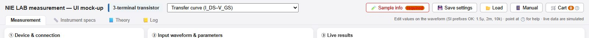
- 1측정 모드 선택. 대분류(3-terminal transistor, Memristor, Oscilloscope …)별로 43개 모드가 있다.Measurement mode. 43 modes grouped by device type (3-terminal transistor, memristor, oscilloscope …).
- 2Sample info — 맨 먼저 넣는다. 사용자·소자 ID만 필수. 넣기 전엔 빨간 테두리에 required.Sample info — fill in first. Only user and device ID are required; red with required until done.
- 3Save settings — 이 모드의 모든 값을 .json 파일로 저장 (다음에 같은 조건으로).Save settings — saves all values of this mode to a .json file for next time.
- 4Load — 저장한 설정이나 카트 파일을 불러온다.Load — loads a saved settings or cart file.
- 5Cart — 담아 둔 측정 목록 (숫자 = 개수). 연속 측정에 쓴다.Cart — the list of queued measurements (number = count). For chained runs.
- 6Measurement 탭 — 실제 측정 화면.Measurement tab — where you measure.
- 7Instrument specs — 2636A/2636B의 범위·정확도·속도 한계.Instrument specs — ranges, accuracy and speed limits of the 2636A/2636B.
- 8Theory — 지금 모드의 원리 그림과 읽을 값·계산식.Theory — principle figure, values to read and formulas for the current mode.
- 9Log — 모든 측정의 기록(누가·언제·어느 소자·파일).Log — record of every run (who, when, which device, which file).
- 11대분류 — 지금 고른 모드가 어느 소자 묶음(3-terminal transistor, Inverter, Oscilloscope …)인지 보여 준다.Group — which device group the selected mode belongs to (3-terminal transistor, inverter, oscilloscope …).
- 10📱 Manual — QR 코드를 띄운다. 휴대폰 카메라로 찍으면 이 매뉴얼이 열린다.📱 Manual — shows a QR code; scan it with your phone to open this manual.
2. Sample info — 무엇을 재는지 먼저 적기2. Sample info — say what you measure first
모든 데이터 파일 머리에 이 정보가 들어가고, 저장 폴더 이름도 여기서 정해진다. 사용자와 소자 ID만 필수이고 나머지는 선택이지만, 나중에 데이터를 찾고 비교할 때 큰 도움이 된다.
This goes into the header of every data file and sets the folder name. Only user and device ID are required; the rest is optional but makes the data much easier to find and compare later.
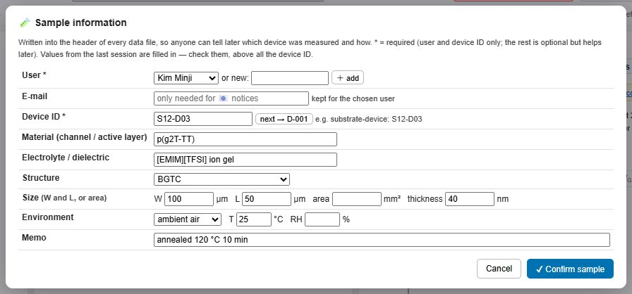
- 1User — 목록에서 고르거나 new에 이름을 쓰고 ＋ add.User — pick from the list or type a new name and press ＋ add.
- 2Device ID — 기판-소자 형식 권장:
S12-D03. 폴더 이름이 된다.Device ID — substrate-device format recommended:S12-D03. Becomes the folder name. - 3next → 끝 번호를 +1 (다음 소자로 옮길 때).next → adds 1 to the last number (when you move to the next device).
- 4재료·전해질은 전에 쓴 값이 목록으로 뜬다.Material and electrolyte suggest values used before.
- 5구조 (BGTC 등).Structure (BGTC etc.).
- 6크기: W·L(µm) 또는 면적(mm²), 두께는 선택.Size: W and L (µm) or area (mm²); thickness optional.
- 7환경·온도·습도 — 대기 중 측정이면 습도를 적어 두자.Environment, temperature, humidity — note the humidity for measurements in air.
- 8Confirm sample. 버튼이 이름 · 소자ID로 바뀌면 완료.Confirm sample. Done when the button shows name · device ID.
3. ① 소자 연결 — 배선과 점검3. ① Device & connection — wiring and checks
연결도는 지금 모드에서 각 단자가 어느 채널에 붙는지 보여 준다. 채널 이름은 항상 장비 + 채널: 2636B CH A, 2636A CH B처럼 읽는다. OUT은 측정, IN은 인가하는 신호다.
The diagram shows which channel each terminal connects to in this mode. Channel names are always instrument + channel, e.g. 2636B CH A, 2636A CH B. OUT = measured, IN = applied.
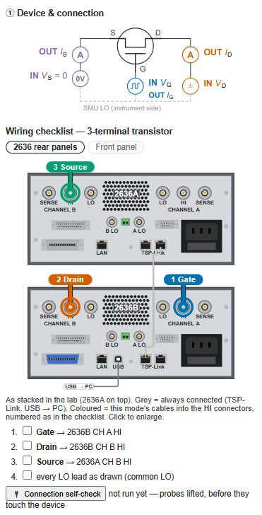
- 1연결도 — 단자(G·S·D)와 채널, 인가/측정 값.Diagram — terminals (G, S, D), channels, applied / measured values.
- 2배선 체크리스트 — 꽂으면서 하나씩 체크. 모두 체크해야 Start가 열린다.Wiring checklist — tick each line as you connect. Start unlocks only when all are ticked.
- 3Connection self-check — 프로브를 소자에 대기 전에 케이블 단락·누설·단선을 점검.Connection self-check — checks cables for shorts, leaks and breaks before the probes touch the device.
- 4장비 뒷면 그림 — 이 모드의 케이블을 어느 단자에 꽂는지 색과 번호로 보여 준다. 누르면 크게 열린다 (3-1).Rear-panel drawing — shows, by colour and number, where this mode's cables go. Click to enlarge (3-1).
- 5그림 탭 — 2636 rear panels / TBS2074B scope(스코프 모드만) / Front panel(전원·출력 램프·REM/LOCAL, 3-2)을 골라 본다.Drawing tabs — switch between 2636 rear panels, TBS2074B scope (scope modes only) and Front panel (power, output lamps, REM / LOCAL, 3-2).
3-1. 장비 뒷면 — 케이블 꽂는 곳3-1. Back of the instruments — where the cables go
연구실 장비는 위가 2636A, 아래가 2636B로 쌓여 있다. 뒷면 그림은 그 모습 그대로 그렸다. 회색 케이블(TSP-Link, USB)은 늘 꽂혀 있는 것이고, 색깔 케이블이 지금 모드에서 꽂을 것이다. 번호는 배선 체크리스트 번호와 같다. 아래 예는 Transfer curve(3단자 트랜지스터)다.
In the lab the instruments are stacked with the 2636A on top and the 2636B below; the drawing shows them that way. Grey cables (TSP-Link, USB) are always connected; coloured cables are the ones for this mode, numbered as in the wiring checklist. Example below: transfer curve (3-terminal transistor).
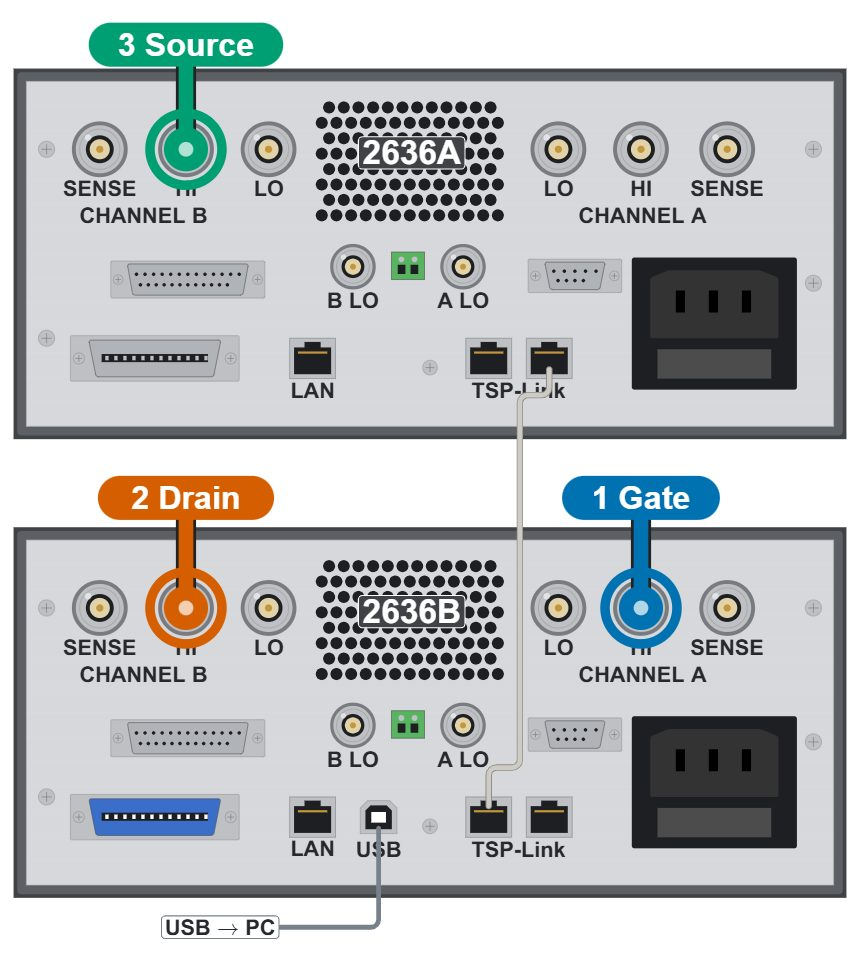
- 1Gate → 2636B CH A HI. 각 채널의 세 커넥터 중 HI(채널 A는 가운데, 글자 HI 아래)에 꽂는다. SENSE HI·LO와 헷갈리지 말 것.Gate → 2636B CH A HI. Of the three connectors of each channel use HI (marked HI on the panel) — not SENSE HI or LO.
- 2Drain → 2636B CH B HI. 채널 B는 왼쪽 묶음, 가운데가 HI.Drain → 2636B CH B HI. Channel B is the left group; HI is the middle one.
- 3Source → 2636A CH B HI — 위쪽 장비(2636A)다.Source → 2636A CH B HI — on the upper instrument (2636A).
- 4TSP-Link 케이블 — 두 장비를 하나처럼 움직이게 한다. 빼지 않는다. 빠져 있으면 2636A 채널을 쓰는 모드가 시작되지 않는다.TSP-Link cable — makes the two instruments work as one. Leave it in; modes that use a 2636A channel will not start without it.
- 5USB → PC — PC는 2636B의 뒷면 USB에만 연결한다 (2636A에는 PC용 USB가 없다).USB → PC — the PC connects only to the rear USB of the 2636B (the 2636A has no PC USB port).
- 6LO 단자와 초록 단자대 — 공통 LO(그라운드) 연결. 연구실 설정 그대로 두고 함부로 바꾸지 않는다.LO jacks and the green terminal block — the common LO (ground) connection. Leave them as set up in the lab.
3-2. 장비 앞면 — 전원·출력 램프·REM3-2. Front of the instruments — power, output lamps, REM
두 장비의 앞면은 이름만 다르고 같다. 측정 중에는 PC가 장비를 조종하므로 앞면 버튼은 거의 누를 일이 없다. 아래 다섯 곳만 알면 된다.
The two front panels are the same apart from the name. While measuring the PC is in control, so you rarely press a front key. Know these five places.
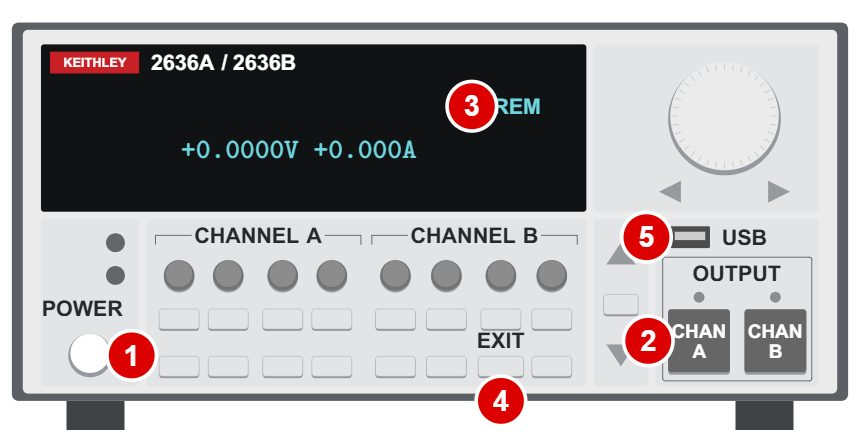
- 1POWER — 두 장비를 모두 켠다. 정확도를 다 내려면 약 1시간 예열.POWER — switch on both instruments. About 1 h warm-up for full accuracy.
- 2OUTPUT ON/OFF (CHAN A / B) — 위 램프가 켜져 있으면 출력 중. 케이블은 램프가 모두 꺼졌을 때만 만진다. 급할 때 누르면 그 출력이 바로 꺼진다.OUTPUT ON/OFF (CHAN A / B) — the lamp above is lit while the output is on. Touch cables only when all lamps are off. Press to switch that output off at once.
- 3REM — PC가 조종 중이라는 표시. 시작 전 두 장비 모두에 떠 있어야 한다.REM — the PC is in control. It must show on both instruments before you start.
- 4EXIT (LOCAL) — 앞면 버튼으로 조종을 되돌린다. 프로그램이 멈춘 뒤에만 쓴다.EXIT (LOCAL) — gives control back to the front keys. Use only after the program has stopped.
- 5앞면 USB — USB 메모리 전용. PC 케이블은 여기가 아니라 2636B 뒷면 USB에.Front USB — for a USB flash drive only. The PC cable goes to the USB on the back of the 2636B.
3-3. Connection self-check3-3. Connection self-check
±10 mV, 1 µA 제한의 아주 작은 신호만 쓰므로 소자를 다치게 하지 않는다. Step 1: 프로브를 공중에 든 채 → 모두 open이어야 정상. Step 2: 모든 탐침을 하나의 금속(단락) 패드에 → 모든 쌍이 몇 Ω이어야 정상.
Only ±10 mV with a 1 µA limit is applied, so the device is safe. Step 1: probes in the air → everything must read open. Step 2: all tips on one bare metal (shorting) pad → every pair must read a few ohms.
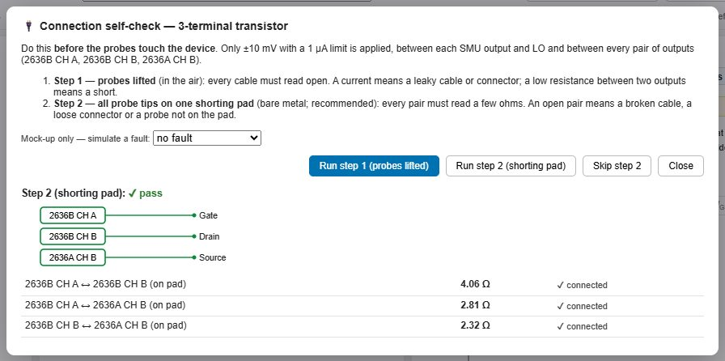
- 1(시안 전용) 일부러 고장을 흉내 내 볼 수 있다.(Mock-up only) simulate a fault to see what it looks like.
- 2Step 1 — 프로브 든 상태.Step 1 — probes lifted.
- 3Step 2 — 단락 패드 위 (권장).Step 2 — on the shorting pad (recommended).
- 4결과 그림: 초록 = 정상, 빨강 = 문제 있는 케이블.Result diagram: green = fine, red = faulty cable.
- 5채널별 측정값과 판정.Reading and verdict for each channel / pair.
실패하면 이렇게 보인다What a failure looks like
예: 두 케이블이 닿아 단락된 경우. 빨간 줄과 설명을 보고 해당 케이블·커넥터·탐침을 고친 뒤 다시 돌린다.
Example: two cables shorted. Read the red line and its explanation, fix that cable, connector or probe, then run again.
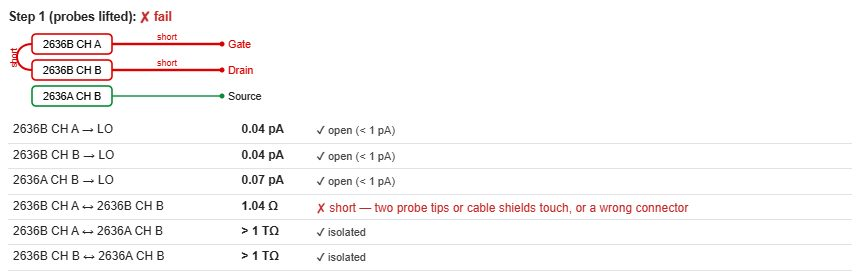
- 1문제 채널이 빨갛게 표시된다 (short, leak, open).The faulty channels turn red (short, leak, open).
- 2원인 설명 — "탐침 두 개나 케이블 실드가 닿음, 또는 커넥터 잘못" 등.Cause — e.g. "two probe tips or cable shields touch, or a wrong connector".
4. ② 입력 파형과 파라미터4. ② Input waveform & parameters
값은 파형 그림 위에서 바로 고친다. 숫자를 바꾸고 Enter 또는 다른 곳을 누르면 파형·예상 시간·미리보기가 즉시 바뀐다. SI 접두어를 쓸 수 있다: 1.5µ, 2m, 10k (µ 대신 u도 됨).
Edit values directly on the waveform. After Enter or clicking elsewhere, the waveform, estimated time and preview update at once. SI prefixes work: 1.5µ, 2m, 10k (u for µ).
위쪽 격자는 모든 모드에 공통인 값이다: ts(샘플 간격), NPLC(적분 시간), Nrepeat(반복 횟수), trepeat(반복 사이 쉼), Icc(채널별 전류 제한, compliance).
The grid on top holds values common to all modes: ts (sampling interval), NPLC (integration time), Nrepeat (repeats), trepeat (pause between repeats), Icc (current limit per channel, compliance).
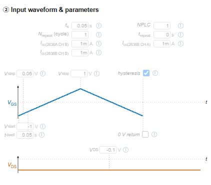
- 1ts — 측정 간격. 결과 그래프의 점 하나 = 한 번 읽기.ts — sampling interval. One dot on the plots = one reading.
- 2NPLC — 클수록 잡음↓ 속도↓. 1 NPLC = 16.7 ms (60 Hz).NPLC — larger = less noise, slower. 1 NPLC = 16.7 ms (60 Hz).
- 3Nrepeat (cycle) — 전체 측정을 몇 번 반복할지.Nrepeat (cycle) — how many times the whole measurement repeats.
- 4Vstep — 스윕 간격.Vstep — sweep step.
- 5Vstop — 스윕 끝 전압.Vstop — sweep end voltage.
- 6Vstart — 스윕 시작 전압.Vstart — sweep start voltage.
4-1. 모르면 ! 에 마우스를4-1. Unsure? Point at !
모든 값 옆의 ! 아이콘에 마우스를 올리면 설명이 뜬다. 무엇인지, 보통 값(Typical), 너무 크면, 너무 작으면 무슨 일이 생기는지 알려 준다.
Point at the ! next to any value for an explanation: what it is, the typical value, and what happens if it is too large or too small.
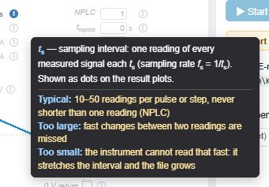
- 1! 아이콘the ! icon
- 2설명 창 — 마우스 포인터를 가리지 않는 쪽에 뜬다.Help box — placed so the pointer does not cover it.
4-2. 장비 한계를 넘으면4-2. When a value exceeds the instrument
장비가 낼 수 없는 값을 넣으면 적용되지 않고 빨간 창이 허용 범위를 알려 준다. 예: 2636A/2636B의 200 V 범위에서는 ±202 V까지, ±20.2 V를 넘으면 전류 한계가 100 mA로 줄어든다.
A value the instrument cannot deliver is not applied; a red box shows the allowed range. Example: up to ±202 V on the 200 V range of the 2636A/2636B; above ±20.2 V the current limit drops to 100 mA.
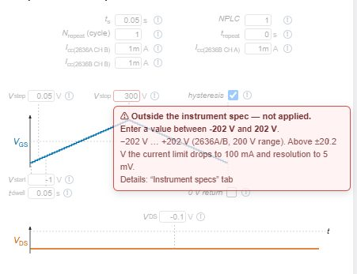
- 1범위를 넘는 값 (300 V)out-of-range value (300 V)
- 2허용 범위와 이유. 자세한 것은 Instrument specs 탭.allowed range and why; details in the Instrument specs tab.
4-3. Signals — 무엇을 측정·계산할지4-3. Signals — what to measure or calculate
각 신호가 input(인가), output(측정), derived(계산) 중 무엇인지, 어느 채널인지 보여 준다. 필요 없는 측정을 끄면 더 빨라진다.
Shows whether each signal is input (applied), output (measured) or derived (calculated), and on which channel. Turning off unneeded readings makes the run faster.
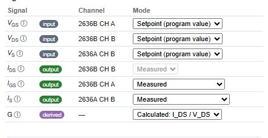
- 1신호 종류 표시signal type
- 2채널channel
- 3모드: Setpoint(프로그램 값) / Measured / Calculated / Off — 일부 신호만 바꿀 수 있다mode: setpoint / measured / calculated / off — only some signals offer choices
4-4. Preview — 실행 전에 결과 모양 보기4-4. Preview — the result before you run
② 칸 아래의 Preview는 지금 값으로 시뮬레이션한 결과 모양과 측정 시간·읽기 수를 보여 준다. 값을 바꾸면 이전 곡선이 회색으로 남아 비교된다. 파형이 길어 칸이 넘치는 모드에서는 자동으로 접힌다(눌러 펼친다).
Preview under column ② shows the simulated result with the current values, with duration and number of readings. After an edit the previous curve stays grey for comparison. In modes with a tall waveform it folds itself to keep the column on screen (click to open).
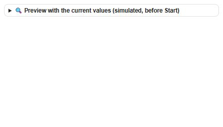
5. ③ 측정하기5. ③ Measuring
Start는 세 가지가 끝나야 열린다: Sample info, 배선 체크리스트, Connection self-check. 노란 줄이 남은 일을 알려 주고, 누르면 그곳으로 간다.
Start unlocks after three things: Sample info, wiring checklist, connection self-check. The yellow line lists what is left; click an item to go there.
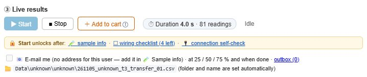
- 1Start — 잠겨 있으면 흐리게.Start — greyed while locked.
- 2Stop — 언제든 중단. 그때까지의 데이터는 저장된다.Stop — stops any time; data so far are kept.
- 3Add to cart — 지금 설정을 카트에 담기 (연속 측정).Add to cart — queue this set-up (chained runs).
- 4예상 측정 시간과 읽기 횟수 — 값을 바꾸면 즉시 갱신.Estimated duration and number of readings — updates as you edit.
- 5Start 잠금 이유 — 남은 할 일.Why Start is locked — what is left to do.
- 6E-mail me — 긴 측정·밤샘 측정 때 25/50/75 %와 완료 시 메일. 주소는 Sample info에.E-mail me — for long / overnight runs: mail at 25/50/75 % and when done. Address in Sample info.
- 7저장 위치 —
Data\사용자\소자ID\날짜_소자ID_모드_번호.csv자동.Save path — automaticData\user\deviceID\date_deviceID_mode_NN.csv.
준비가 끝나면When everything is ready
세 가지가 끝나면 노란 줄이 사라지고 ▶ Start가 파랗게 켜진다.
When all three are done the yellow line disappears and ▶ Start turns blue.
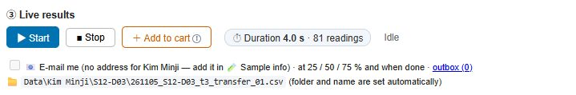
- 1누르면 측정 시작click to start
5-1. 측정 중5-1. While measuring
측정 중에는 화면 잠금·절전이 막히고, 진행 막대와 남은 시간이 보인다. 그래프는 실시간으로 그려진다 (빨간 점 = 지금 읽은 값).
During a run, screen lock and sleep are blocked; a progress bar and the time left are shown. Plots draw live (red dot = latest reading).
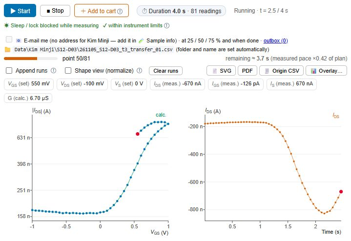
- 1상태: Running, 현재 시간 / 전체status: running, elapsed / total
- 2진행 막대와 남은 시간progress bar and time left
- 3중단stop
5-2. 결과 보기5-2. Reading the results
위쪽은 요약 그래프(예: IDS–VGS), 아래는 신호별 시간 그래프다. 일반 SMU 모드는 자동 분석을 하지 않는다 — Theory 탭의 식으로 현상을 이해한 뒤 분석한다.
On top is the summary plot (e.g. IDS–VGS), below are the time traces per signal. Ordinary SMU modes are not analysed automatically — understand the phenomenon with the formulas in the Theory tab, then analyse.
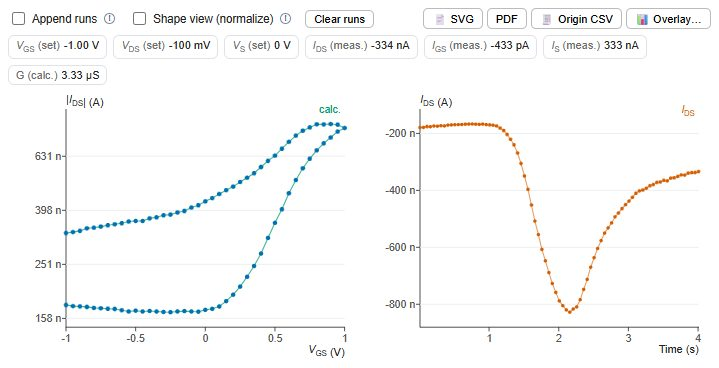
- 1Append runs — 이전 측정을 지우지 않고 겹쳐 그림.Append runs — keep earlier runs on the plots.
- 2Shape view — 0–1로 정규화해 모양만 비교.Shape view — normalise to 0–1 to compare shapes.
- 3Clear runs — 겹쳐 둔 이전 측정을 그래프에서 지움 (파일은 그대로).Clear runs — removes the appended earlier runs from the plots (files stay).
- 4SVG / PDF — 논문용 그림.SVG / PDF — paper figure.
- 5Origin CSV — Origin에서 바로 열리는 형식 (이름·단위·설명 3줄 머리).Origin CSV — opens directly in Origin (3 header rows: name, unit, comment).
- 6Overlay — Log에서 여러 측정을 골라 한 그림에.Overlay — pick several runs from the log into one figure.
- 7신호 칩 — 각 신호의 마지막 값 (set = 인가값, meas. = 측정, calc. = 계산).Signal chips — latest value of each signal (set = applied, meas. = measured, calc. = calculated).
- 8그래프 — 실선 = 측정, 점선 = 계산.Plots — solid = measured, dashed = calculated.
6. 논문 그림 만들기6. Making a paper figure
5.5 × 5 cm, Arial 7 pt, ISO 기호(기울임 기호, 똑바른 단위)로 바로 논문에 넣을 수 있는 그림을 만든다. Log에 있는 측정을 체크하면 겹쳐 그리고, 범례는 소자 ID가 된다.
Makes a figure ready for a paper: 5.5 × 5 cm, Arial 7 pt, ISO symbols (italic quantities, upright units). Tick runs from the log to overlay them; the legend is the device ID.
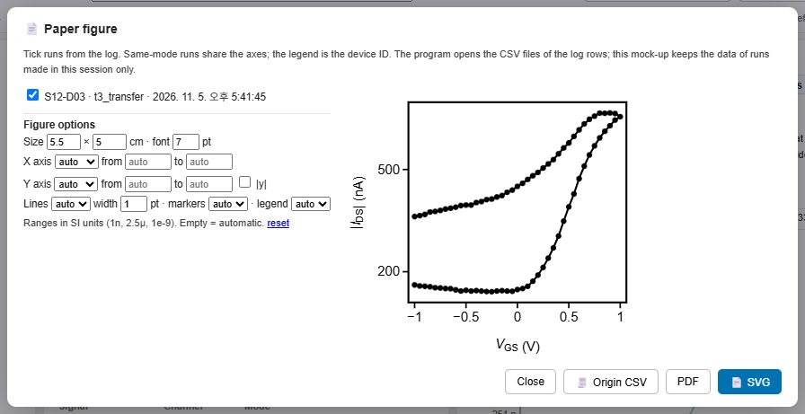
- 1미리보기 — 옵션을 바꾸면 즉시 반영.Preview — updates as you change options.
- 2Figure options — 크기·글꼴, 축 lin/log·범위, |y|, 선·마커·범례 위치. 다음에도 기억된다.Figure options — size, font, axis lin/log and range, |y|, lines, markers, legend. Remembered next time.
- 3SVG 저장 (Illustrator·PowerPoint에서 편집 가능)save SVG (editable in Illustrator / PowerPoint)
- 4PDF 저장save PDF
- 5같은 데이터를 Origin CSV로same data as Origin CSV
1n, 2.5µ).💡 SVG를 PowerPoint에 붙여 넣고 그룹 해제하면 선·글자·축을 하나씩 미세하게 고칠 수 있다. 나만의 스타일로 다듬을 때 쓴다.💡 Log scale: when the current spans several decades set Y axis to log; for negative currents tick |y|. Ranges in SI (
1n, 2.5µ).💡 Paste the SVG into PowerPoint and ungroup it to fine-tune each line, label and axis — handy for making the figure your own.
7. 카트 — 여러 측정 연속으로7. Cart — several measurements in a row
모드와 값을 정하고 ＋ Add to cart를 누르면 그 순간의 설정이 담긴다(나중에 화면을 고쳐도 담긴 것은 안 바뀜). 예: Transfer → Output → Retention. 제목과 표 맨 아래에 총 측정 시간이 나온다(소자 하나 기준, 배선 바꾸는 시간 제외).
Set a mode and its values and press ＋ Add to cart: a snapshot is stored (later edits on screen do not change it). Example: transfer → output → retention. The title and the last row show the total time (per device, without wiring changes).
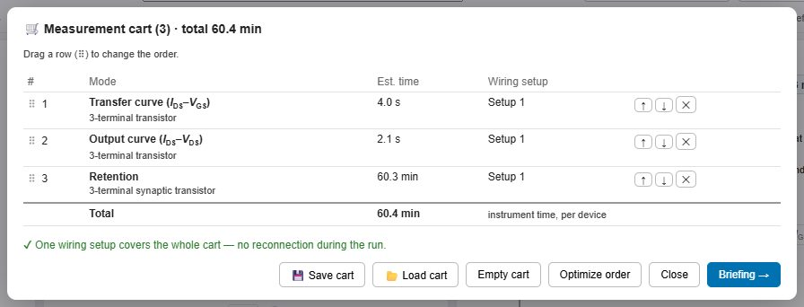
- 1⠿를 끌어 순서 바꾸기drag ⠿ to reorder
- 2Optimize order — 배선 변경이 가장 적게 순서를 정리Optimize order — orders items for the fewest wiring changes
- 3카트 저장/불러오기 — 자주 쓰는 측정 묶음을 파일로save / load the cart — keep frequent sequences as files
- 4Briefing — 실행 전 확인 화면으로Briefing — go to the pre-run check
7-1. Briefing — 실행 전 마지막 확인7-1. Briefing — last check before the run
사용 장비, 셋업별 배선, 각 측정의 조건과 저장 파일, 장비 한계 점검, 샘플 정보를 한 장에 보여 준다. 끝까지 읽고 체크해야 Run cart가 켜진다.
Shows instruments, wiring per setup, conditions and file of each item, the limit check and the sample on one page. Read it and tick the box to enable Run cart.
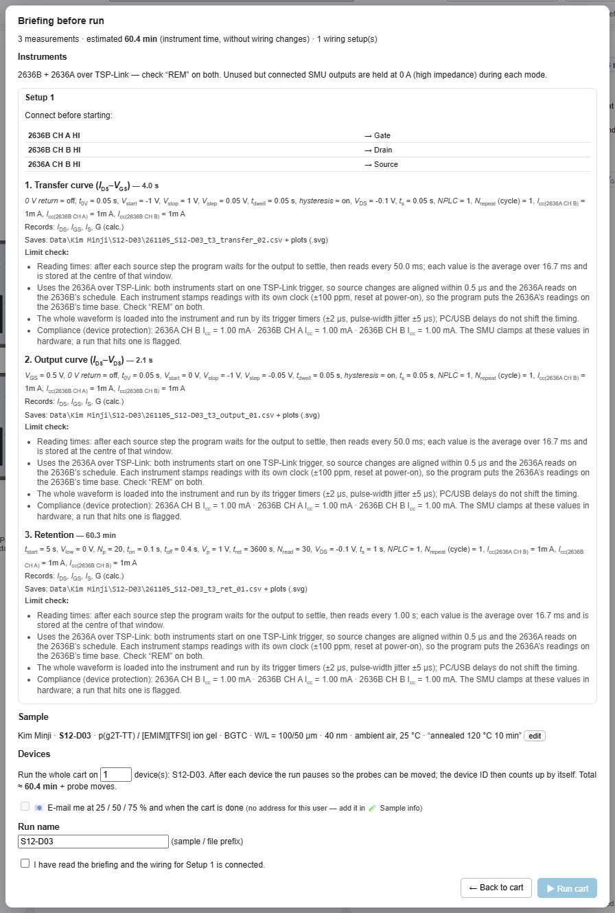
- 1셋업과 배선표setup and wiring table
- 2여러 소자 연속: 소자 수를 넣으면 한 소자가 끝날 때마다 멈추고, 프로브를 옮긴 뒤 Next device를 누르면 소자 ID가 자동으로 +1.Several devices: enter the number of devices; after each one the run pauses, move the probes, press Next device and the device ID goes up by 1.
- 3메일 알림 (긴 측정에 권장)e-mail notices (recommended for long runs)
- 4브리핑을 읽고 배선을 확인했다는 체크tick: briefing read and wiring connected
- 5Run cartRun cart
8. 다른 탭8. The other tabs
8-1. Instrument specs8-1. Instrument specs
2636A/2636B가 낼 수 있는 전압·전류 범위, 정확도, 잡음, 전력 한계(사분면 그림), 최소 펄스 폭, 속도(NPLC별)를 정리했다. 값이 빨갛게 거부되면 여기서 이유를 찾는다.
Voltage / current ranges, accuracy, noise, power envelope (quadrant plot), minimum pulse width and speed per NPLC of the 2636A/2636B. When a value is rejected, find the reason here.
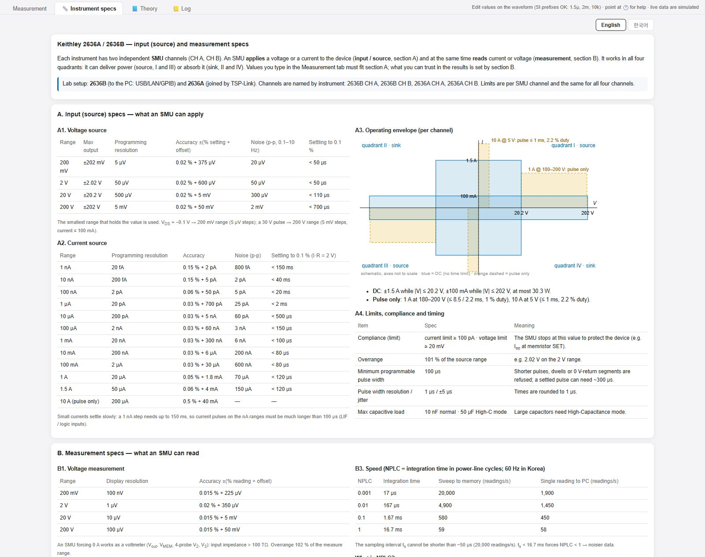
8-2. Theory8-2. Theory
지금 모드의 물리 원리 그림과 "무엇을 보나 / 그래프에서 읽을 값 / 직접 계산" 설명. 43개 모드 모두 있다. 측정 전에 한 번 읽고, 측정 뒤 계산할 때 다시 본다.
The physical principle of the current mode with "what it shows / read from the curve / by hand". All 43 modes have one. Read it before measuring and again when you calculate.
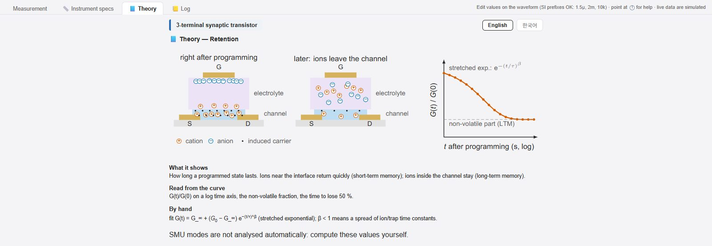
- 1대분류device group
- 2English / 한국어 전환English / Korean switch
- 3원리 그림 (누르면 확대)principle figure
8-3. Log8-3. Log
측정이 끝나거나 중단될 때마다 한 줄이 자동으로 쌓인다. 먼저 측정 PC의 Data\log.csv에, 그다음 구글 시트 「Keithley 2636 측정 일지」에 올라간다(인터넷이 끊기면 나중에). 장비 사용 기록도 겸한다.
One line is added automatically whenever a run ends or is stopped: first to Data\log.csv on the measurement PC, then to the Google Sheet “Keithley 2636 측정 일지” (later if offline). It doubles as the instrument-use record.
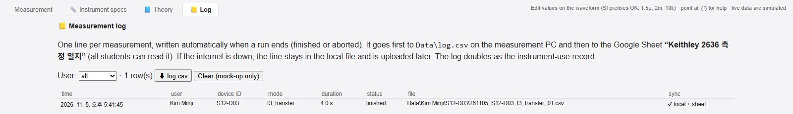
- 1사용자별 보기filter by user
- 2log.csv 내려받기download log.csv
- 3기록: 시간·사용자·소자·모드·시간·상태·파일·동기화record: time, user, device, mode, duration, status, file, sync
9. 스코프(오실로스코프) 모드9. Oscilloscope modes
SMU만으로는 너무 빠른 현상(µs~ms)을 TBS2074B 스코프로 잰다. 전류는 션트 저항 Rsh 양단 전압으로 읽는다(I = Vsh/Rsh). 배선이 달라지므로 빨간 상자가 바꿀 연결만 보여 준다. 스코프 모드는 측정 뒤 지연·상승·감쇠 등을 자동으로 계산해 준다.
Phenomena too fast for the SMU alone (µs–ms) are recorded with the TBS2074B scope. Current is read as the voltage across a shunt Rsh (I = Vsh/Rsh). Wiring differs, so a red box lists only the connections to change. Scope modes compute delay, rise, decay etc. automatically after the run.
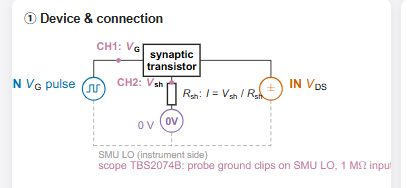
- 1스코프 연결도 (CH1 = 게이트 에지, CH2 = 션트 전압)scope diagram (CH1 = gate edge, CH2 = shunt voltage)
9-1. TBS2074B 연결하기9-1. Connecting the TBS2074B
스코프 모드를 고르면 ① 칸에 이 그림이 나온다(모드마다 다름, 누르면 크게). 프로브는 스코프 앞면의 번호 붙은 BNC 입력(1 노랑, 2 파랑)에 꽂는다. 프로브 끝은 그림의 노드에, 접지 클립은 SMU LO(공통 LO)에 물린다. 10×로 표시된 곳은 프로브의 스위치와 스코프 채널 설정을 모두 10×로 맞춘다. 스코프는 뒷면 USB 포트로 PC에 연결한다. SMU 쪽 케이블(회색 상자)은 3-1의 뒷면 그림대로 꽂는다. 아래 예는 EPSC fast capture.
When you pick an oscilloscope mode, this drawing appears in panel ① (it differs per mode; click to enlarge). Plug each probe into the numbered BNC input on the scope front (1 yellow, 2 blue). Put the probe tip on the node shown and the ground clip on SMU LO (the common LO). Where it says 10×, set both the probe switch and the scope channel to 10×. The scope connects to the PC through the USB port on its back. The SMU leads (grey boxes) go in as in the rear-panel drawing (3-1). Example below: EPSC fast capture.
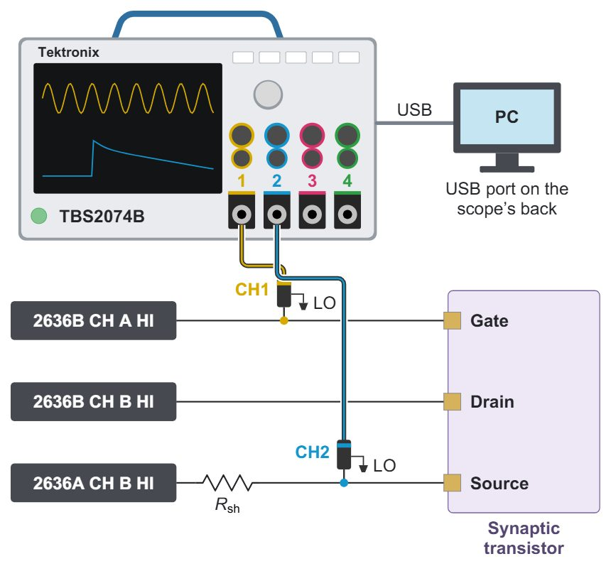
10. 모드 목록 (43개)10. List of modes (43)
위쪽 목록에서 고른다. 각 모드의 원리와 계산식은 Theory 탭에 있다.Pick from the list at the top. The principle and formulas of each mode are in the Theory tab.
- Transfer curve (IDS–VGS)
- Output curve (IDS–VDS)
- DC bias (IDS vs time)
- Pulse train (EPSC)
- Pulse amplitude sweep
- Pulse width sweep
- SNDP (pulse-number dependence)
- SRDP (pulse-rate dependence)
- LTP / LTD
- PPF (paired-pulse facilitation)
- STDP (spike timing)
- Bit pattern (1–6 bit: manual or 0…01 → 1…1 auto)
- Time-programmed pulses (ECG: a, b, c, d …)
- Retention
- Endurance (LTP/LTD cycling)
- I–V sweep (SET / RESET)
- Pulse + read (potentiation/depression)
- 4-terminal transfer / output (G1, G2, D, S free)
- Dual-gate pulse timing
- Voltage transfer (Vout–Vin)
- Input pulse → output
- VTC family (several VDD)
- Weight programming → VTC shift
- Bias stress (Vout drift at fixed Vin)
- Output swing vs input frequency
- Voltage transfer (Vout–Vin, R-load)
- Voltage transfer, RL emulated by SMU (no resistor)
- Input pulse → output (R-load)
- Free current waveform
- 1-input logic (X)
- 2-input logic (X, Y)
- 3-input logic (X, Y, Z) — wiring change
- C–V by voltage ramp (SMU only)
- Transistor C–V: G–S, G–D, G–S+D or S–D (ramp)
- C by step transient (SMU + oscilloscope)
- EPSC fast capture (gate pulse → ID(t))
- LIF spike capture (shape, delay, refractory)
- Memristor SET transient (switching time, energy)
- Inverter switching speed (tr, tf, delay)
- Low-frequency impedance (SMU sine + scope, Bode)
- Current noise and RTN (PSD, two-level statistics)
- Photoresponse speed (LED pulse → photocurrent)
- Sheet resistance (I sweep)
11. 문제가 생기면11. Troubleshooting
Start가 안 눌린다.Start does not work.
노란 줄을 본다: Sample info, 체크리스트, self-check 중 남은 것을 누르면 그곳으로 간다.
Read the yellow line: click the remaining item (sample info, checklist, self-check).
값을 넣었는데 빨간 창이 뜨고 적용이 안 된다.A red box appears and the value is not applied.
장비 한계 밖이다. 창의 허용 범위 안으로 바꾸고, 이유는 Instrument specs 탭에서.
It is outside the instrument limits. Use a value in the shown range; see the Instrument specs tab for why.
전류가 일정한 값에서 잘린다 (평평하게).The current is clipped flat at one value.
컴플라이언스(Icc)에 걸린 것. 소자가 견디는 범위에서 Icc를 올린다.
Compliance (Icc) reached. Raise Icc within what the device can take.
데이터가 너무 지글거린다.The data are too noisy.
NPLC를 1 → 10으로 올린다 (느려짐). 케이블 실드·접지, 프로브 접촉도 확인.
Raise NPLC from 1 to 10 (slower). Also check cable shields, grounding and probe contact.
측정이 너무 오래 걸린다.The run takes too long.
예상 시간을 보며 NPLC를 낮추거나 Vstep를 키우거나, 필요 없는 신호를 Off로.
Watch the estimated time; lower NPLC, increase Vstep, or set unneeded signals to Off.
self-check에서 short가 나온다.Self-check reports a short.
빨간 두 채널의 탐침 끝이나 케이블 실드가 닿았는지, 커넥터를 잘못 꽂았는지 본다.
Check whether the probe tips or shields of the two red channels touch, or a connector is in the wrong socket.
파일이 다른 소자 이름으로 저장됐다.The file was saved under the wrong device.
Sample info의 소자 ID를 확인하지 않은 것. 다음 소자로 옮길 때는 next →.
The device ID was not checked. Use next → when moving to the next device.
밤새 측정을 걸어 두고 싶다.I want to run overnight.
카트에 담고 Briefing에서 메일 알림을 켠다. 측정 중엔 PC 절전이 자동으로 막힌다.
Put it in the cart and turn on e-mail notices in the briefing. Sleep is blocked automatically during the run.
예전 측정과 겹쳐 비교하고 싶다.I want to compare with an earlier run.
Overlay…에서 Log의 측정을 체크한다. 같은 화면이면 Append runs.
Tick the runs in Overlay…. On the same screen, use Append runs.
12. 용어12. Glossary
- SMU
- Source-Measure Unit. 전압(또는 전류)을 주면서 동시에 전류(또는 전압)를 재는 장치. 2636A/2636B에 각각 CH A, CH B 두 개.Source-measure unit: applies a voltage (or current) and measures the current (or voltage) at the same time. Two per instrument (CH A, CH B).
- 2636A / 2636B
- 연구실의 Keithley 장비 두 대. 2636B가 PC에 연결되고 2636A는 TSP-Link로 묶인다. 화면에서는 항상 정확한 이름으로 표시한다.The two Keithley instruments. The 2636B connects to the PC; the 2636A is linked over TSP-Link. Always shown by their exact names.
- NPLC
- 한 번 읽는 데 쓰는 시간 (전원 주기 단위). 1 NPLC = 16.7 ms. 길수록 잡음이 적다.Integration time of one reading in power-line cycles. 1 NPLC = 16.7 ms. Longer = less noise.
- ts
- 샘플 간격. 그래프 점 사이 시간.Sampling interval: time between dots on the plots.
- Icc (compliance)
- 채널 전류 상한. 소자 보호용. 걸리면 전류가 그 값에서 잘린다.Current limit of a channel, protects the device. Reached = current clipped at that value.
- HI / LO
- SMU 출력의 두 단자. HI가 신호, LO가 기준(공통). 모든 LO는 그림처럼 공통으로 묶는다.The two terminals of an SMU output. HI = signal, LO = reference (common). Tie all LOs as drawn.
- Setup
- 카트 안에서 같은 배선으로 연속 측정할 수 있는 묶음.A group of cart items that run with the same wiring.
- Rsh
- 스코프 모드에서 전류를 전압으로 바꾸는 션트 저항. 클수록 신호↑ 응답 속도↓ (≈ Rsh × 20 pF).Shunt resistor that turns current into voltage in scope modes. Larger = more signal, slower (≈ Rsh × 20 pF).